9 Hồi quy tuyến tính
9.1 Khớp đường thẳng, phần dư và tương quan
Khớp một đường thẳng vào dữ liệu
Mô hình hóa các biến số
Trong phần này, chúng ta sẽ học cách định lượng mối quan hệ giữa hai biến số, cũng như mô hình hóa các biến phản hồi (response variables) dạng số bằng cách sử dụng một biến giải thích (explanatory variable) dạng số hoặc dạng phân loại.
Tỷ lệ nghèo đói so với Tỷ lệ tốt nghiệp THPT
Biểu đồ phân tán (Scatterplot) dưới đây cho thấy mối quan hệ giữa tỷ lệ tốt nghiệp THPT (HS graduate rate) ở tất cả 50 bang của Hoa Kỳ và DC với % cư dân sống dưới mức nghèo khổ (thu nhập dưới $23,050 cho một gia đình 4 người vào năm 2012).

Biến phản hồi (Response variable)? % nghèo đói
Biến giải thích (Explanatory variable)? % tốt nghiệp THPT
Mối quan hệ? tuyến tính, nghịch biến (âm), mạnh vừa phải
Sử dụng hồi quy tuyến tính để dự báo nghèo đói
Mô hình tuyến tính để dự báo tỷ lệ nghèo đói từ tỷ lệ tốt nghiệp trung học phổ thông ở Hoa Kỳ là:
\[ \widehat{poverty} = 64.78 - 0.62 \times HS_{grad} \]
Dấu “mũ” (hat) được sử dụng để biểu thị rằng đây là một giá trị ước lượng.
Tỷ lệ tốt nghiệp trung học ở Georgia là 85.1%. Mô hình dự báo mức độ nghèo đói cho bang này là bao nhiêu?
\[ 64.78 - 0.62 \times 85.1 = 12.018 \]
Quan sát đường thẳng bằng mắt
Đường thẳng nào sau đây có vẻ khớp nhất với mối quan hệ tuyến tính giữa % nghèo đói và % tốt nghiệp THPT? Hãy chọn một.
(a)
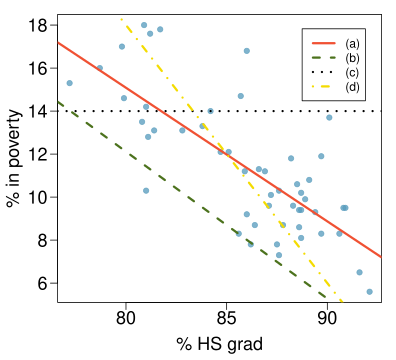
Phần dư
Phần dư (Residuals) là những gì còn lại sau khi khớp mô hình: Dữ liệu = Phần khớp + Phần dư
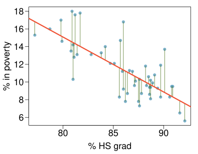
Phần dư (Residual)
Phần dư là sự khác biệt giữa giá trị quan sát (\(y_i\)) và giá trị dự báo \(\hat{y}_i\). \[ e_i = y_i - \hat{y}_i \]
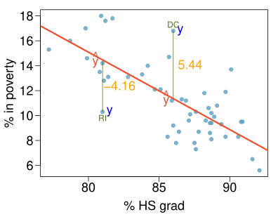
- % sống trong nghèo đói ở DC cao hơn 5.44% so với dự báo.
- % sống trong nghèo đói ở RI thấp hơn 4.16% so với dự báo.
Mô tả các mối quan hệ tuyến tính bằng tương quan
Định lượng mối quan hệ
- Tương quan (Correlation) mô tả sức mạnh của mối liên hệ tuyến tính giữa hai biến.
- Nó nhận các giá trị trong khoảng từ -1 (nghịch biến hoàn hảo) đến +1 (đồng biến hoàn hảo).
- Giá trị bằng 0 cho biết không có mối liên hệ tuyến tính.
Đoán hệ số tương quan
Phương án nào sau đây là dự đoán tốt nhất cho hệ số tương quan giữa % nghèo đói và % tốt nghiệp THPT?
- 0.6
- -0.75 (Đáp án đúng)
- -0.1
- 0.02
- -1.5
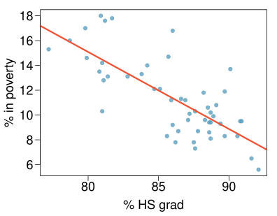
Đoán hệ số tương quan
Phương án nào sau đây là dự đoán tốt nhất cho hệ số tương quan giữa % nghèo đói và % tốt nghiệp THPT?
- 0.1
- -0.6
- -0.4
- 0.9
- 0.5 (Đáp án đúng)
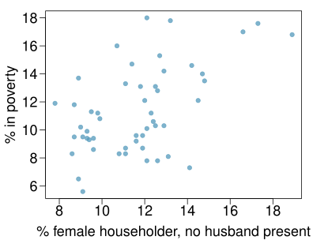
Đánh giá hệ số tương quan
Trường hợp nào sau đây có tương quan mạnh nhất, tức là hệ số tương quan gần +1 hoặc -1 nhất?
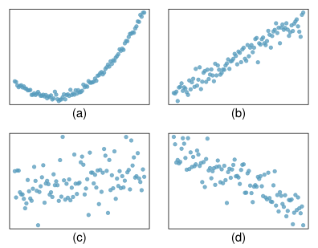
(b) \(\rightarrow\) tương quan có nghĩa là mối liên hệ tuyến tính
9.2 Khớp đường thẳng bằng hồi quy bình phương tối thiểu
Một thước đo khách quan để tìm đường thẳng tốt nhất
- Chúng ta muốn một đường thẳng có các phần dư nhỏ:
Lựa chọn 1: Giảm thiểu tổng các độ lớn (giá trị tuyệt đối) của các phần dư \[ |e_1| + |e_2| + \cdots + |e_n| \]
Lựa chọn 2: Giảm thiểu tổng bình phương các phần dư – bình phương tối thiểu (least squares) \[ e_1^2 + e_2^2 + \cdots + e_n^2 \]
- Tại sao lại dùng bình phương tối thiểu?
- Được sử dụng phổ biến nhất
- Dễ tính toán bằng tay và bằng phần mềm hơn
- Trong nhiều ứng dụng, một phần dư lớn gấp đôi phần dư khác thường tồi tệ hơn gấp nhiều lần
Đường thẳng bình phương tối thiểu
\[ \hat{y} = \beta_0 + \beta_1 x \]
- \(\hat{y}\): Giá trị dự báo của biến phản hồi, \(y\)
- \(\beta_0\): Hệ số chặn (Intercept), tham số
- \(b_0\): Hệ số chặn, ước lượng điểm (point estimate)
- \(\beta_1\): Hệ số góc (Slope), tham số
- \(b_1\): Hệ số góc, ước lượng điểm
- \(x\): Biến giải thích
Các điều kiện cho đường thẳng bình phương tối thiểu
- Tính tuyến tính (Linearity)
- Các phần dư gần chuẩn (Nearly normal residuals)
- Độ biến thiên không đổi (Constant variability)
Điều kiện: (1) Tính tuyến tính
- Mối quan hệ giữa biến giải thích và biến phản hồi phải là tuyến tính.
- Kiểm tra bằng biểu đồ phân tán của dữ liệu, hoặc biểu đồ phần dư (residuals plot).
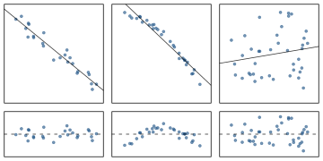
Giải phẫu một biểu đồ phần dư
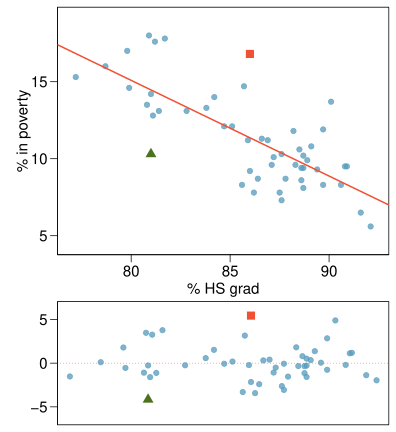
RI:
\[\begin{align*} \%~HS~grad &= 81 \qquad \%~in~poverty = 10.3 \\ \widehat{\%~in~poverty} &= 64.68 - 0.62 \times 81 = 14.46 \\ e &= \%~in~poverty - \widehat{\%~in~poverty} \\ &= 10.3 - 14.46 = -4.16 \end{align*}\]
DC:
\[\begin{align*} \%~HS~grad &= 86 \qquad \%~in~poverty = 16.8 \\ \widehat{\%~in~poverty} &= 64.68 - 0.62 \times 86 = 11.36 \\ e &= \%~in~poverty - \widehat{\%~in~poverty} \\ &= 16.8 - 11.36 = 5.44 \end{align*}\]
Điều kiện: (2) Các phần dư gần chuẩn
- Các phần dư nên có phân phối gần chuẩn.
- Điều kiện này có thể không được thỏa mãn khi có các quan sát bất thường không tuân theo xu hướng của phần còn lại của dữ liệu.
- Kiểm tra bằng biểu đồ tần suất (histogram).
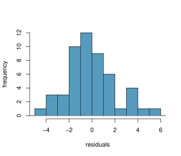
Điều kiện: (3) Độ biến thiên không đổi
- Độ biến thiên của các điểm xung quanh đường thẳng bình phương tối thiểu nên xấp xỉ không đổi.
- Điều này có nghĩa là độ biến thiên của các phần dư xung quanh đường 0 cũng nên xấp xỉ không đổi.
- Còn được gọi là tính đồng phương sai (homoscedasticity).
- Kiểm tra bằng biểu đồ phần dư.
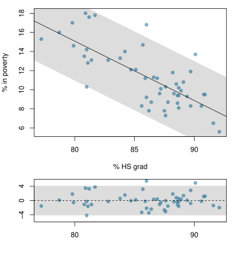
Kiểm tra các điều kiện
Mô hình tuyến tính này rõ ràng đang vi phạm điều kiện nào?
- Độ biến thiên không đổi
- Mối quan hệ tuyến tính (Đáp án đúng)
- Phần dư có phân phối chuẩn
- Không có giá trị ngoại lệ cực đoan
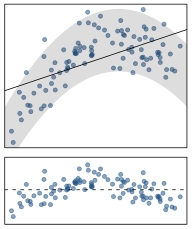
Kiểm tra các điều kiện
Mô hình tuyến tính này rõ ràng đang vi phạm điều kiện nào?
- Độ biến thiên không đổi (Đáp án đúng)
- Mối quan hệ tuyến tính
- Phần dư có phân phối chuẩn
- Không có giá trị ngoại lệ cực đoan
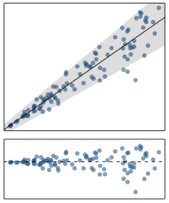
Tìm đường thẳng bình phương tối thiểu
Cho biết…
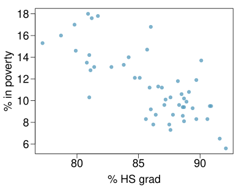
| % tốt nghiệp THPT (\(x\)) | % nghèo đói (\(y\)) | |
|---|---|---|
| trung bình (mean) | \(\bar{x} = 86.01\) | \(\bar{y} = 11.35\) |
| độ lệch chuẩn (sd) | \(s_x = 3.73\) | \(s_y = 3.1\) |
| tương quan (correlation) | \(R = -0.75\) |
Diễn giải các ước lượng tham số của mô hình hồi quy
Hệ số góc
Hệ số góc Hệ số góc của hồi quy có thể được tính bằng \[ b_1 = \frac{s_y}{s_x} R \]
Trong ngữ cảnh… \[ b_1 = \frac{3.1}{3.73} \times -0.75 = -0.62 \]
Diễn giải Cứ mỗi điểm % tăng thêm trong tỷ lệ tốt nghiệp THPT, chúng ta kỳ vọng % sống trong nghèo đói sẽ thấp hơn trung bình 0.62 điểm %.
Hệ số chặn
Hệ số chặn Hệ số chặn là nơi đường hồi quy cắt trục \(y\). Việc tính toán hệ số chặn sử dụng một thực tế là đường hồi quy luôn đi qua điểm \((\bar{x},\bar{y})\). \[ b_0 = \bar{y} - b_1 \bar{x} \]
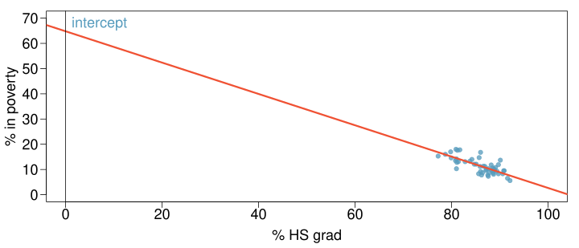
\[\begin{align*} b_0 &= 11.35 - (-0.62) \times 86.01 \\ &= 64.68 \end{align*}\]
Câu nào sau đây là cách diễn giải đúng về hệ số chặn?
- Với mỗi điểm % tăng thêm của tỷ lệ tốt nghiệp THPT, % sống trong nghèo đói dự kiến tăng trung bình 64.68%.
- Với mỗi điểm % giảm đi của tỷ lệ tốt nghiệp THPT, % sống trong nghèo đói dự kiến tăng trung bình 64.68%.
- Việc không có người tốt nghiệp THPT dẫn đến 64.68% cư dân sống dưới mức nghèo khổ.
- Các bang không có người tốt nghiệp THPT dự kiến sẽ có trung bình 64.68% cư dân sống dưới mức nghèo khổ. (Đáp án đúng)
- Ở các bang không có người tốt nghiệp THPT, % sống trong nghèo đói dự kiến tăng trung bình 64.68%.
Thêm về hệ số chặn
Vì không có bang nào trong tập dữ liệu có tỷ lệ tốt nghiệp THPT bằng 0, nên hệ số chặn không được quan tâm, không hữu ích lắm và cũng không đáng tin cậy vì giá trị dự báo của hệ số chặn nằm quá xa so với phần lớn dữ liệu.
Đường hồi quy
\[ \widehat{\%~in~poverty} = 64.68 - 0.62~\%~HS~grad \]

Tóm tắt: Diễn giải hệ số góc và hệ số chặn
Diễn giải hệ số góc và hệ số chặn
- Hệ số chặn (Intercept): Khi \(x = 0\), \(y\) dự kiến bằng hệ số chặn.
- Hệ số góc (Slope): Với mỗi đơn vị tăng thêm của \(x\), \(y\) dự kiến tăng / giảm trung bình một lượng bằng hệ số góc.
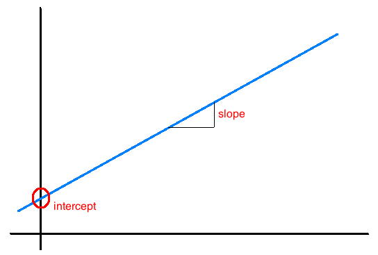
Lưu ý: Những phát biểu này không mang tính nhân quả, trừ khi nghiên cứu là một thử nghiệm có đối chứng ngẫu nhiên.
Dự báo & Ngoại suy
Dự báo
- Việc sử dụng mô hình tuyến tính để dự báo giá trị của biến phản hồi cho một giá trị cho trước của biến giải thích được gọi là dự báo (prediction), đơn giản bằng cách thay giá trị của \(x\) vào phương trình mô hình tuyến tính.
- Sẽ có một sự không chắc chắn nhất định đi kèm với giá trị dự báo.
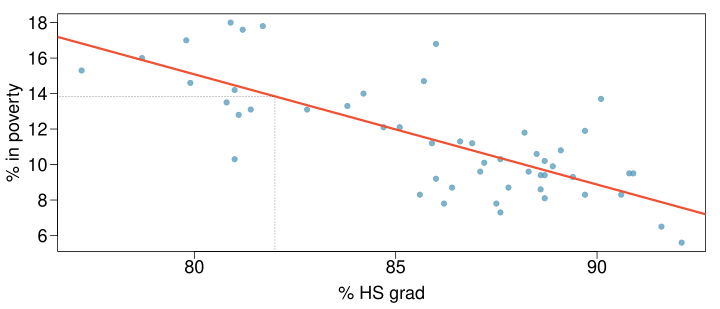
Ngoại suy
- Áp dụng một ước lượng mô hình cho các giá trị nằm ngoài phạm vi của dữ liệu gốc được gọi là ngoại suy (extrapolation).
- Đôi khi hệ số chặn có thể là một sự ngoại suy.
Các ví dụ về ngoại suy
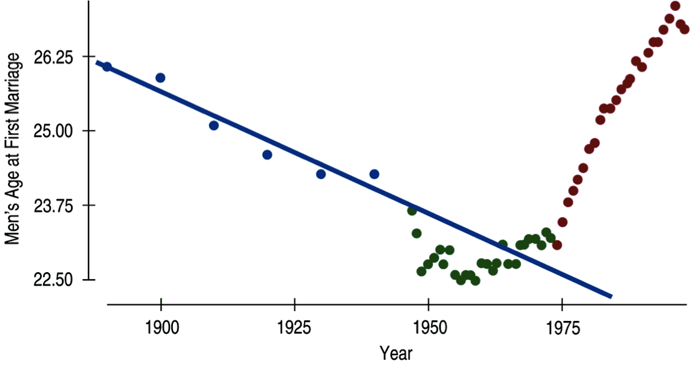
Các ví dụ về ngoại suy
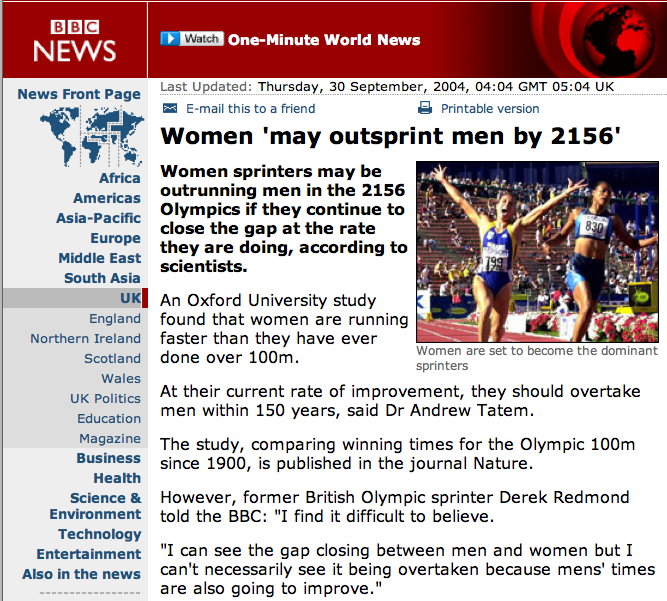
Các ví dụ về ngoại suy
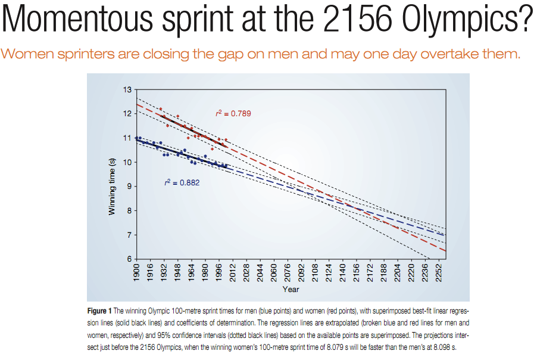
Sử dụng \(R^2\) để mô tả độ mạnh của sự phù hợp
\(R^2\)
- Độ mạnh của sự phù hợp (fit) của một mô hình tuyến tính thường được đánh giá bằng \(R^2\).
- \(R^2\) được tính bằng bình phương của hệ số tương quan.
- Nó cho chúng ta biết bao nhiêu phần trăm độ biến thiên của biến phản hồi được giải thích bởi mô hình.
- Phần biến thiên còn lại được giải thích bởi các biến không được đưa vào mô hình hoặc bởi tính ngẫu nhiên vốn có trong dữ liệu.
- Đối với mô hình chúng ta đang làm việc, \(R^2 = (-0.62)^2 = 0.38\).
Diễn giải \(R^2\)
Cách diễn giải nào sau đây là đúng cho \(R = -0.62\), \(R^2 = 0.38\)?
- 38% độ biến thiên của % tốt nghiệp THPT giữa 51 bang được giải thích bởi mô hình.
- 38% độ biến thiên của % cư dân sống trong nghèo đói giữa 51 bang được giải thích bởi mô hình. (Đáp án đúng)
- 38% thời gian % tốt nghiệp THPT dự báo chính xác % sống trong nghèo đói.
- 62% độ biến thiên của % cư dân sống trong nghèo đói giữa 51 bang được giải thích bởi mô hình.
9.3 Các loại giá trị ngoại lệ trong hồi quy tuyến tính
Các loại giá trị ngoại lệ
Các giá trị ngoại lệ (outliers) ảnh hưởng như thế nào đến đường bình phương tối thiểu trong biểu đồ này?
Để trả lời câu hỏi này, hãy nghĩ xem đường hồi quy sẽ ở đâu nếu có và không có (các) giá trị ngoại lệ. Nếu không có các giá trị ngoại lệ, đường hồi quy sẽ dốc hơn và nằm gần nhóm quan sát lớn hơn. Khi có các giá trị ngoại lệ, đường thẳng bị kéo lên trên và ra xa một số quan sát trong nhóm lớn.
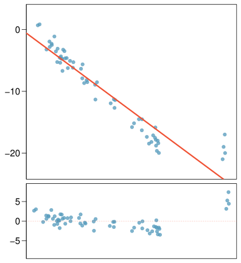
Các loại giá trị ngoại lệ
Các giá trị ngoại lệ ảnh hưởng như thế nào đến đường bình phương tối thiểu trong biểu đồ này?
Nếu không có giá trị ngoại lệ, sẽ không có mối quan hệ rõ ràng giữa \(x\) và \(y\).
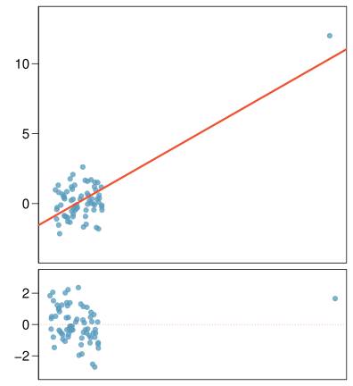
Một số thuật ngữ
- Giá trị ngoại lệ (Outliers) là các điểm nằm xa đám mây các điểm dữ liệu.
- Các giá trị ngoại lệ nằm xa tâm của đám mây theo phương ngang được gọi là các điểm có đòn bẩy cao (high leverage).
- Các điểm có đòn bẩy cao thực sự ảnh hưởng đến hệ số góc của đường hồi quy được gọi là các điểm ảnh hưởng (influential).
- Để xác định một điểm có phải là điểm ảnh hưởng hay không, hãy hình dung đường hồi quy khi có và không có điểm đó. Hệ số góc của đường thẳng có thay đổi đáng kể không? Nếu có, thì đó là điểm ảnh hưởng. Nếu không, thì đó không phải là điểm ảnh hưởng.
Các điểm ảnh hưởng
Dữ liệu có sẵn về logarit của nhiệt độ bề mặt và logarit của cường độ ánh sáng của 47 ngôi sao trong cụm sao CYG OB1.
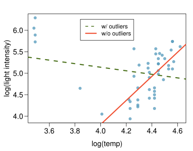
Các loại giá trị ngoại lệ
Phương án nào dưới đây mô tả đúng nhất về giá trị ngoại lệ này?
- điểm ảnh hưởng
- đòn bẩy cao (Đáp án đúng)
- không có phương án nào ở trên
- không có giá trị ngoại lệ nào
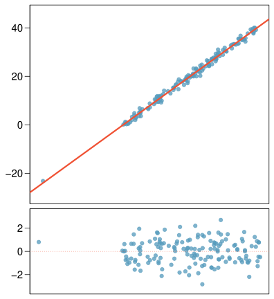
Các loại giá trị ngoại lệ
Giá trị ngoại lệ này có ảnh hưởng đến hệ số góc của đường hồi quy không?
Không nhiều…
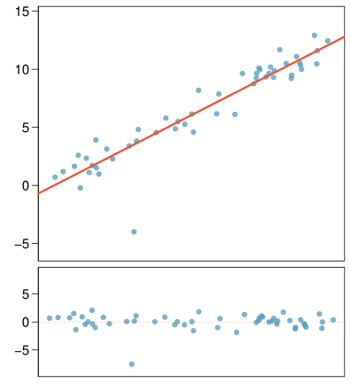
Tóm tắt
Câu nào sau đây là đúng?
- Các điểm ảnh hưởng luôn làm thay đổi hệ số chặn của đường hồi quy.
- Các điểm ảnh hưởng luôn làm giảm \(R^2\).
- Một điểm có đòn bẩy thấp có khả năng trở thành điểm ảnh hưởng cao hơn nhiều so với một điểm có đòn bẩy cao.
- Khi tập dữ liệu bao gồm một điểm ảnh hưởng, mối quan hệ giữa biến giải thích và biến phản hồi luôn là phi tuyến.
- Không có câu nào ở trên là đúng. (Đáp án đúng)
\[ R = 0.08, R^2 = 0.0064 \]
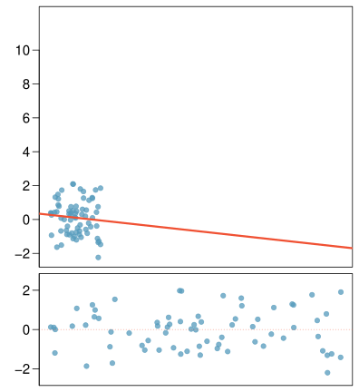
\[ R = 0.79, R^2 = 0.6241 \]
9.4 Suy diễn cho hồi quy tuyến tính
Hiểu kết quả hồi quy từ phần mềm
Bản chất hay nuôi dưỡng?
Vào năm 1966, Cyril Burt đã công bố một bài báo có tiêu đề “Sự xác định di truyền của những khác biệt về trí thông minh: Một nghiên cứu về các cặp song sinh cùng trứng được nuôi dưỡng tách biệt?” Dữ liệu bao gồm điểm IQ của [được giả định là một mẫu ngẫu nhiên gồm] 27 cặp song sinh cùng trứng, một người được nuôi dưỡng bởi cha mẹ nuôi, người kia bởi cha mẹ ruột.
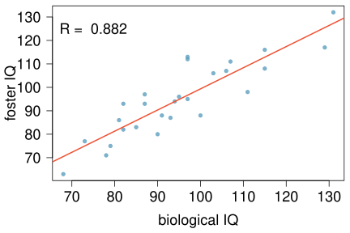
Câu nào sau đây là sai?
Coefficients:
Estimate Std. Error t value Pr(>|t|)
(Intercept) 9.20760 9.29990 0.990 0.332
bioIQ 0.90144 0.09633 9.358 1.2e-09
Residual standard error: 7.729 on 25 degrees of freedom
Multiple R-squared: 0.7779, Adjusted R-squared: 0.769
F-statistic: 87.56 on 1 and 25 DF, p-value: 1.204e-09 - Trung bình, điểm IQ của anh chị em ruột tăng thêm 10 điểm thì điểm IQ của anh chị em nuôi tăng thêm 9 điểm.
- Khoảng 78% điểm IQ của các anh chị em nuôi có thể được dự báo chính xác bởi mô hình. (Đáp án đúng)
- Mô hình tuyến tính là \(\widehat{fosterIQ} = 9.2 + 0.9 \times bioIQ\).
- Các cặp song sinh nuôi có điểm IQ cao hơn mức trung bình thường cũng có anh chị em ruột có điểm IQ cao hơn mức trung bình.
Kiểm định cho hệ số góc
Giả sử rằng 27 cặp song sinh này tạo thành một mẫu đại diện cho tất cả các cặp song sinh bị tách biệt khi sinh ra, chúng ta muốn kiểm định xem liệu những dữ liệu này có cung cấp bằng chứng thuyết phục rằng IQ của người anh chị em ruột là một biến dự báo có ý nghĩa cho IQ của người anh chị em nuôi hay không. Các giả thuyết phù hợp là gì?
- \(H_0: b_0 = 0; H_A: b_0 \ne 0\)
- \(H_0: \beta_0 = 0; H_A: \beta_0 \ne 0\)
- \(H_0: b_1 = 0; H_A: b_1 \ne 0\)
- \(H_0: \beta_1 = 0; H_A: \beta_1 \ne 0\) (Đáp án đúng)
| Ước lượng (Estimate) | Sai số chuẩn (Std. Error) | giá trị t (t value) | Pr(>\(|\)t\(|\)) | |
|---|---|---|---|---|
| Hệ số chặn (Intercept) | 9.2076 | 9.2999 | 0.99 | 0.3316 |
| bioIQ | 0.9014 | 0.0963 | 9.36 | 0.0000 |
- Chúng ta luôn sử dụng kiểm định \(t\) trong suy diễn cho hồi quy.
- Thống kê kiểm định (Test statistic), \(T = \frac{\text{ước lượng điểm} - \text{giá trị null}}{SE}\)
- Ước lượng điểm = \(b_1\) là hệ số góc quan sát được.
- \(SE_{b_1}\) là sai số chuẩn đi kèm với hệ số góc.
- Bậc tự do đi kèm với hệ số góc là \(df = n - 2\), trong đó \(n\) là kích thước mẫu.
- Lưu ý: Chúng ta mất đi 1 bậc tự do cho mỗi tham số chúng ta ước lượng, và trong hồi quy tuyến tính đơn (simple linear regression), chúng ta ước lượng 2 tham số, \(\beta_0\) và \(\beta_1\).
| Ước lượng (Estimate) | Sai số chuẩn (Std. Error) | giá trị t (t value) | Pr(>\(|\)t\(|\)) | |
|---|---|---|---|---|
| Hệ số chặn (Intercept) | 9.2076 | 9.2999 | 0.99 | 0.3316 |
| bioIQ | 0.9014 | 0.0963 | 9.36 | 0.0000 |
\[\begin{eqnarray*} T &=& \frac{0.9014 - 0}{0.0963} = 9.36 \\ df &=& 27 - 2 = 25 \\ p-value &=& P(|T| > 9.36) < 0.01 \end{eqnarray*}\]
% Tốt nghiệp đại học so với % người gốc Tây Ban Nha ở LA
Bạn có thể nói gì về mối quan hệ giữa % tốt nghiệp đại học và % người gốc Tây Ban Nha trong một mẫu gồm 100 khu vực mã zip (zip code) ở LA?
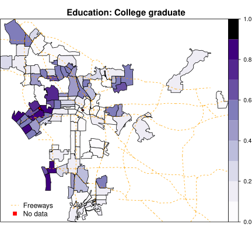
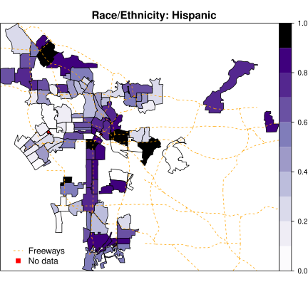
% Có trình độ đại học so với % người gốc Tây Ban Nha ở LA - cái nhìn khác
Bạn có thể nói gì về mối quan hệ giữa % tốt nghiệp đại học và % người gốc Tây Ban Nha trong một mẫu gồm 100 khu vực mã zip ở LA?
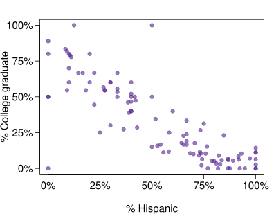
% Có trình độ đại học so với % người gốc Tây Ban Nha ở LA - mô hình tuyến tính
Cách diễn giải nào dưới đây là tốt nhất cho hệ số góc?
| Ước lượng (Estimate) | Sai số chuẩn (Std. Error) | giá trị t (t value) | Pr(>\(|\)t\(|\)) | |
|---|---|---|---|---|
| Hệ số chặn (Intercept) | 0.7290 | 0.0308 | 23.68 | 0.0000 |
| %Hispanic | -0.7527 | 0.0501 | -15.01 | 0.0000 |
- Tăng 1% cư dân gốc Tây Ban Nha trong một khu vực mã zip ở LA đi kèm với mức giảm 75% trong % tốt nghiệp đại học.
- Tăng 1% cư dân gốc Tây Ban Nha trong một khu vực mã zip ở LA đi kèm với mức giảm 0.75% trong % tốt nghiệp đại học. (Đáp án đúng)
- Cứ thêm 1% cư dân gốc Tây Ban Nha sẽ làm giảm % tốt nghiệp đại học trong một khu vực mã zip ở LA đi 0.75%.
- Trong các khu vực mã zip không có cư dân gốc Tây Ban Nha, % tốt nghiệp đại học dự kiến là 75%.
% Có trình độ đại học so với % người gốc Tây Ban Nha ở LA - mô hình tuyến tính
Những dữ liệu này có cung cấp bằng chứng thuyết phục rằng có mối quan hệ có ý nghĩa thống kê giữa % người gốc Tây Ban Nha và % tốt nghiệp đại học ở các khu vực mã zip tại LA không?
| Ước lượng (Estimate) | Sai số chuẩn (Std. Error) | giá trị t (t value) | Pr(>\(|\)t\(|\)) | |
|---|---|---|---|---|
| Hệ số chặn (Intercept) | 0.7290 | 0.0308 | 23.68 | 0.0000 |
| hispanic | -0.7527 | 0.0501 | -15.01 | 0.0000 |
Có, giá trị p cho % người gốc Tây Ban Nha là thấp, cho thấy dữ liệu cung cấp bằng chứng thuyết phục rằng tham số hệ số góc khác 0.
Giá trị p này đáng tin cậy đến mức nào nếu các khu vực mã zip này không được chọn ngẫu nhiên?
Không đáng tin lắm…
Khoảng tin cậy cho hệ số góc
Hãy nhớ rằng một khoảng tin cậy (confidence interval) được tính bằng \(ước~lượng~điểm \pm ME\) và bậc tự do đi kèm với hệ số góc trong hồi quy tuyến tính đơn là \(n - 2\). Phương án nào dưới đây là khoảng tin cậy 95% đúng cho tham số hệ số góc? Lưu ý rằng mô hình được dựa trên các quan sát từ 27 cặp song sinh.
| Ước lượng (Estimate) | Sai số chuẩn (Std. Error) | giá trị t (t value) | Pr(>\(|\)t\(|\)) | |
|---|---|---|---|---|
| Hệ số chặn (Intercept) | 9.2076 | 9.2999 | 0.99 | 0.3316 |
| bioIQ | 0.9014 | 0.0963 | 9.36 | 0.0000 |
- \(9.2076 \pm 1.65 \times 9.2999\)
- \(0.9014 \pm 2.06 \times 0.0963\) (Đáp án đúng)
- \(0.9014 \pm 1.96 \times 0.0963\)
- \(9.2076 \pm 1.96 \times 0.0963\)
\[\begin{eqnarray*} n &=& 27 \qquad df = 27 - 2 = 25 \\ 95\%:~t^\star_{25} &=& 2.06 \\ 0.9014 &\pm& 2.06 \times 0.0963 \\ (0.7 &,& 1.1) \end{eqnarray*}\]
Tóm tắt
- Suy diễn cho hệ số góc của mô hình hồi quy tuyến tính với một biến dự báo (single-predictor):
- Kiểm định giả thuyết: \[ T = \frac{b_1 - giá~trị~null}{SE_{b_1}} \qquad df = n - 2 \]
- Khoảng tin cậy: \[ b_1 \pm t^\star_{df = n - 2} SE_{b_1} \]
- Giá trị null thường bằng 0 vì chúng ta thường kiểm tra xem có bất kỳ mối quan hệ nào giữa biến giải thích và biến phản hồi hay không.
- Kết quả hồi quy cung cấp \(b_1\), \(SE_{b_1}\), và giá trị p hai phía cho kiểm định \(t\) cho hệ số góc với giá trị null là 0.
- Chúng ta hiếm khi thực hiện suy diễn cho hệ số chặn, vì vậy chúng ta sẽ tập trung vào các ước lượng và suy diễn cho hệ số góc.
Thận trọng
- Luôn nhận thức được loại dữ liệu bạn đang làm việc: mẫu ngẫu nhiên, mẫu không ngẫu nhiên, hay toàn bộ quần thể.
- Suy diễn thống kê, và các giá trị p kết quả, là vô nghĩa khi bạn đã có dữ liệu của toàn bộ quần thể.
- Nếu bạn có một mẫu không ngẫu nhiên (bị chệch), việc suy diễn trên các kết quả sẽ không đáng tin cậy.
- Mục tiêu cuối cùng là có được các quan sát độc lập.